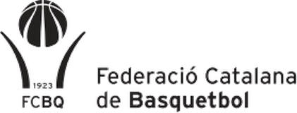

Museu
Museu de la Torneria de la Vall del Ges
Seu a l'antiga Torneria Mecànica Vidal (1898-1901). Explica la industrialització de Catalunya a partir de l'ofici del torner de fusta i banya.

Mini Masculí i Femení Interterritorial
Campionat de Catalunya
Tota la informació de la jornada: horaris, com arribar-hi, on menjar i què veure a Torelló.
Què visitar si acompanyeu l'equip tot el cap de setmana.
Seu a l'antiga Torneria Mecànica Vidal (1898-1901). Explica la industrialització de Catalunya a partir de l'ofici del torner de fusta i banya.
Documentada des del 881; l'edifici actual és del 1672, amb dues torretes i un esvelt campanar.
Esmentat des del 1402; l'edifici actual (1924) és obra de Josep M. Pericas. Passeig amb arbres i dues fonts, i vistes de 360° des del Puig de les Tres Creus.
Plaça porticada, carrer Nou (segle XV, antic camí ral de Vic) i els carrers dels Arcs, de Capsavila i de Sant Feliu.